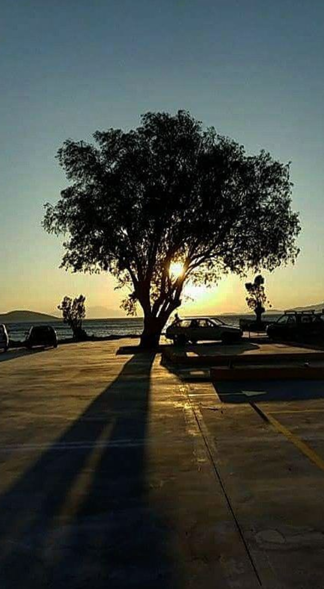
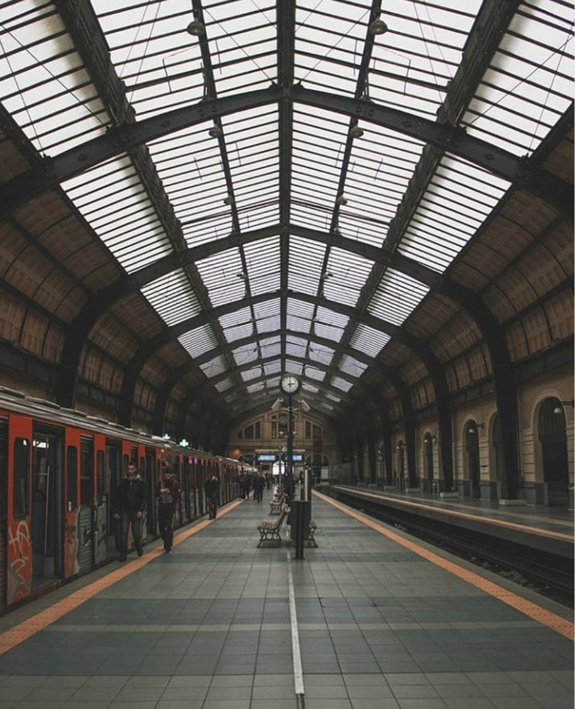

Ένα από τα αγαπημένα μου χόμπι είναι ο χορός. Ξεκίνησα από πολύ μικρή να ασχολούμαι και δεν έχω σταματήσει μεχρι σήμερα.
Στα 6 μου έτη γράφτηκα σε παραδοσιακούς χορούς όπου και έκανα για τα επόμενα 6 χρόνια. Επίσης την ίδια περίοδο ήταν που ξεκίνησα και το μπαλέτο.
Ωστόσο το μπαλέτο το συνεχίζω μέχρι και σήμερα καθώς παράλληλα με αυτό κάνω και σύγχρονο χορό.
Μου αρέσει πάρα πολύ να χορεύω στον ελεύθερο μου χρόνο γιατί είναι κάτι που με κάνει να ξεχνιέμαι και να ηρεμώ απο τις καθημερινές μου υποχρεώσεις.
Ένα σχετικά πρόσφατο χόμπι μου αποτελεί η γυμναστική. Λόγω του lockdown οι σχολές χορού δεν λειτουργούν κι έτσι πέρα από τον χορό
ξεκίνησα να γυμνάζομαι πιο εντατικά παρακολουθώντας βίντεο με ειδικούς(www.chloeting.com).
Φυσικά μαρέσει και να πηγαίνω για περπάτημα στη φύση καθώς είναι κάτι πολύ χαλαρωτικό!!!
Τέλος, λατρεύω την φωτογραφία. Μου αρέσει να βγάζω όμορφες φωτογραφίες είτε με τη φύση είτε με αγαπημένους μου ανθρώπους.

